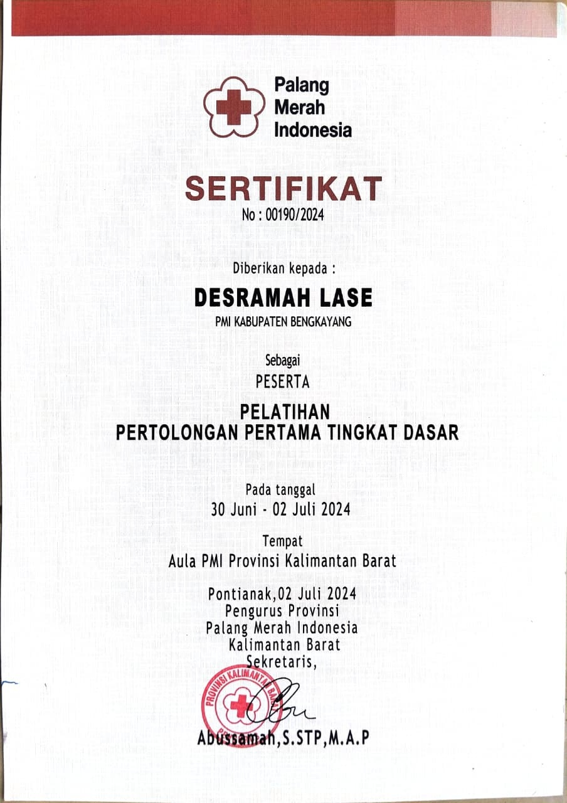
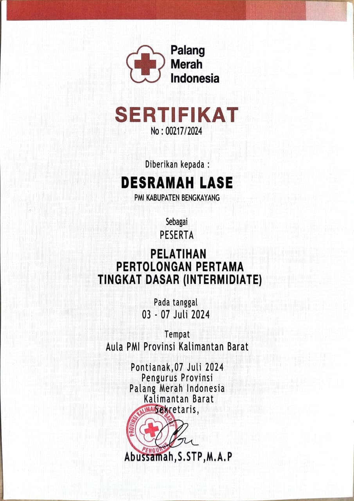
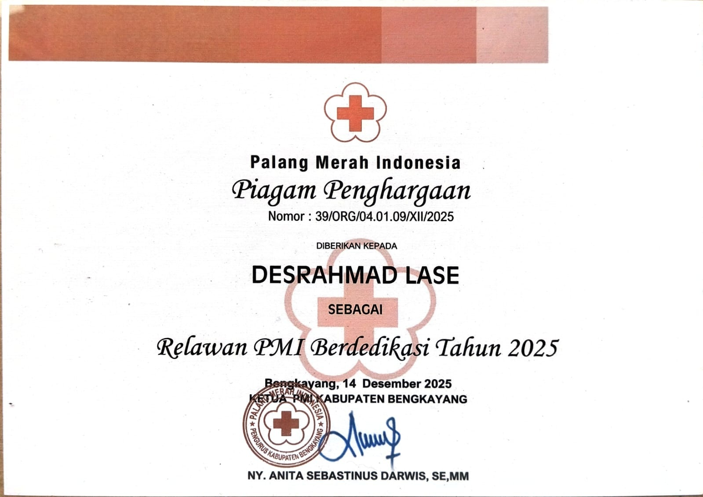
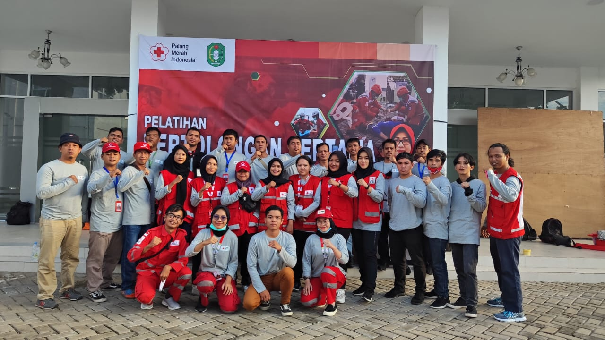
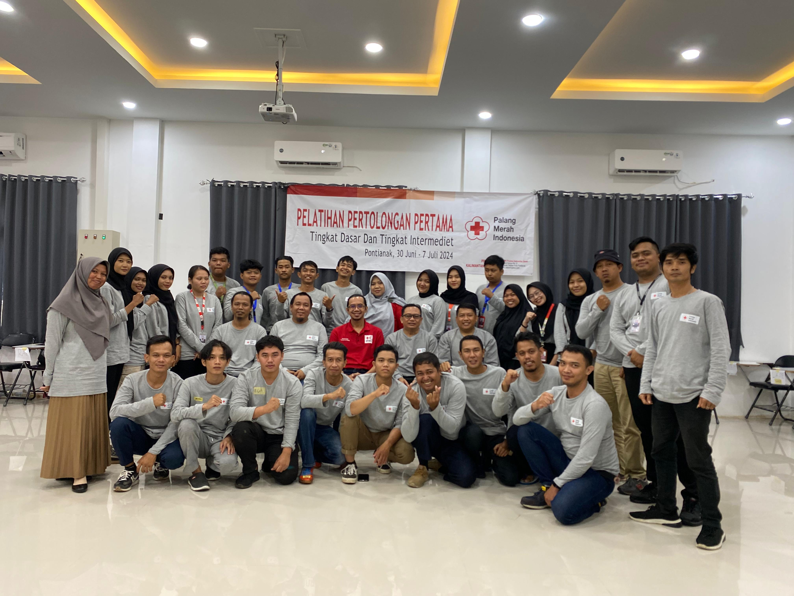
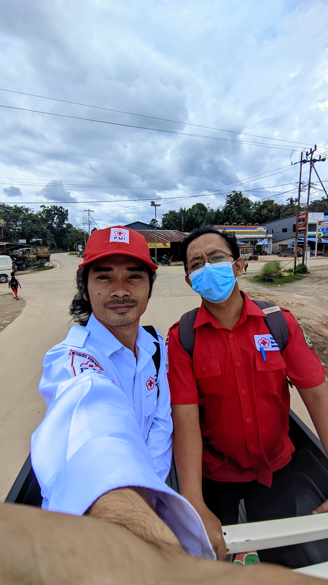
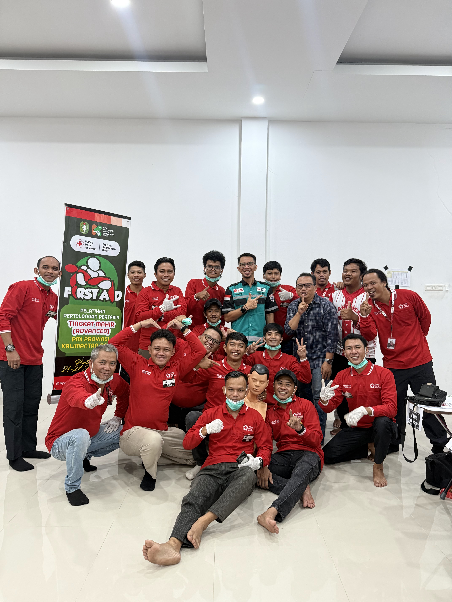
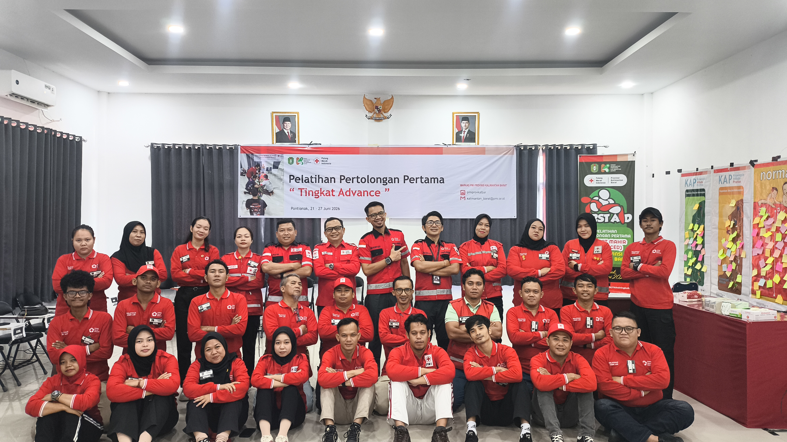
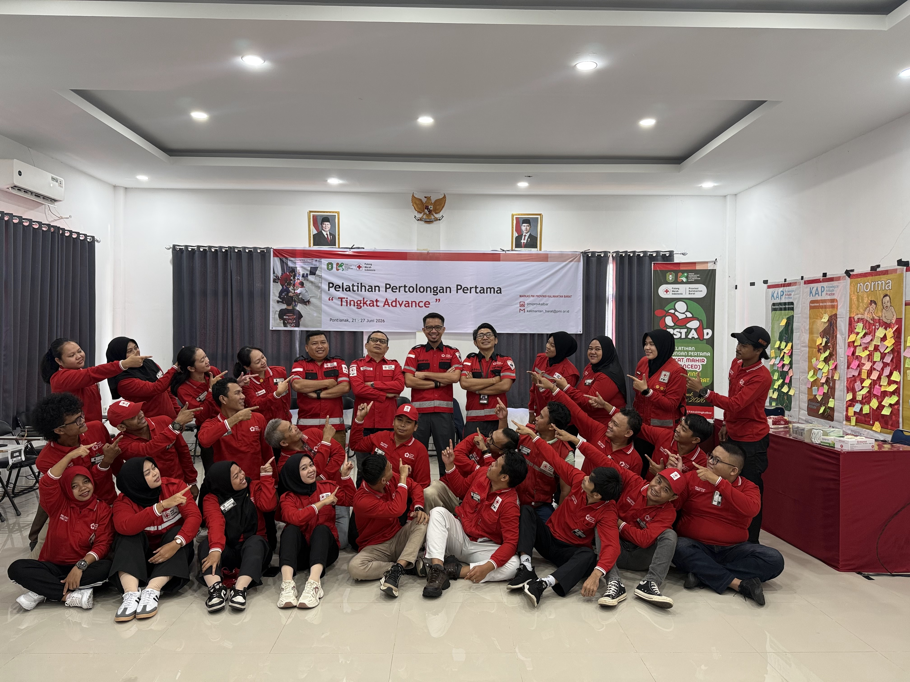

Halo, saya
Desrahmad Lase, S.Pd.
Educator • Humanitarian • Lifelong Learner
Sarjana Pendidikan Agama Kristen, Relawan KSR PMI Kabupaten Bengkayang, dan pembelajar yang memiliki minat pada pendidikan, kemanusiaan, kepemimpinan, serta teknologi.

Tentang Saya
Saya adalah seorang Sarjana Pendidikan Agama Kristen yang memiliki komitmen pada dunia pendidikan, pelayanan kemanusiaan, dan pengembangan diri. Sebagai Relawan KSR PMI Kabupaten Bengkayang, saya percaya bahwa ilmu pengetahuan dan kepedulian sosial harus berjalan beriringan untuk memberikan dampak positif bagi masyarakat.
🎓 Pendidikan
Lulusan S1 Pendidikan Agama Kristen dan saat ini sedang melanjutkan studi Magister Pendidikan (M.Pd.).
⛑️ KSR PMI
Aktif sebagai Relawan PMI sejak 2018 dan menjadi anggota KSR PMI Kabupaten Bengkayang sejak tahun 2020.
💻 Teknologi
Memiliki minat dalam pengembangan website, desain grafis, dan pemanfaatan teknologi untuk pendidikan.
Pencapaian
2018-Sekarang
Mengabdi di PMI Kabupaten Bengkayang
2022-2026
Menyelesaikan Studi Sarjana Pendidikan Agama Kristen S.Pd di STT Rahmat Emmanuel Jakarta
3
Sertifikasi Seminar, Pertolongan Pertama & Penghargaan
1
Keanggotaan KSR PMI
100%
Komitmen dalam Pelayanan
Perjalanan Saya
Perjalanan pendidikan, pengabdian, dan pengembangan diri yang membentuk saya hingga saat ini.
Relawan PMI
Mulai bergabung sebagai Relawan Palang Merah Indonesia Kabupaten Bengkayang.
Anggota KSR PMI
Resmi menjadi anggota Korps Sukarela PMI Kabupaten Bengkayang.
Memulai Studi S1
Menempuh pendidikan Sarjana Pendidikan Agama Kristen.
First Aid Basic
Lulus Sertifikasi Pertolongan Pertama Tingkat Dasar.
First Aid Intermediate
Menyelesaikan Sertifikasi Pertolongan Pertama Tingkat Intermediet.
S.Pd. & First Aid Advance
Menyelesaikan studi Sarjana serta Sertifikasi Pertolongan Pertama Tingkat Advance dan melanjutkan studi Magister Pendidikan.
Kompetensi & Keahlian
Kompetensi yang saya kembangkan melalui pendidikan, pengalaman organisasi, dan praktik di lapangan.
Pendidikan
Pengajaran Pendidikan Agama Kristen, penyusunan perangkat pembelajaran, penelitian pendidikan, dan pengembangan kurikulum.
Pertolongan Pertama
Memiliki sertifikasi Pertolongan Pertama Tingkat Dasar, Intermediet, dan Advance serta pengalaman sebagai Relawan KSR PMI.
Teknologi
Pengembangan website menggunakan HTML, CSS, JavaScript serta desain grafis untuk media pembelajaran.
Kepemimpinan
Berpengalaman bekerja dalam tim, mengelola kegiatan organisasi, dan membangun kolaborasi dalam pelayanan kemanusiaan.
Sertifikasi
Beberapa sertifikasi yang telah saya peroleh sebagai bentuk komitmen terhadap pengembangan kompetensi profesional.

First Aid Basic
Pertolongan Pertama Tingkat Dasar
2024
First Aid Intermediate
Pertolongan Pertama Tingkat Intermediet
2025
First Aid Advance
Pertolongan Pertama Tingkat Advance
2026Galeri Kegiatan
Dokumentasi berbagai kegiatan pendidikan, pelayanan kemanusiaan, pelatihan, dan aktivitas profesional.










Hubungi Saya
Terbuka untuk kolaborasi, pendidikan, kegiatan kemanusiaan, maupun diskusi profesional.
Alamat
Jalan Sekip Lama Gang Melati, BTN GRHB Blok B4. Kab. Bengkayang, Kalimantan Barat, Indonesia